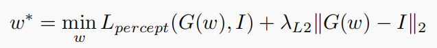
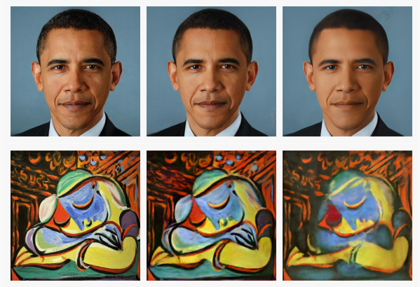
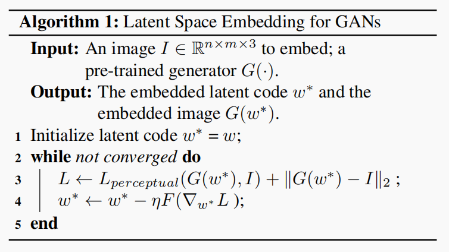
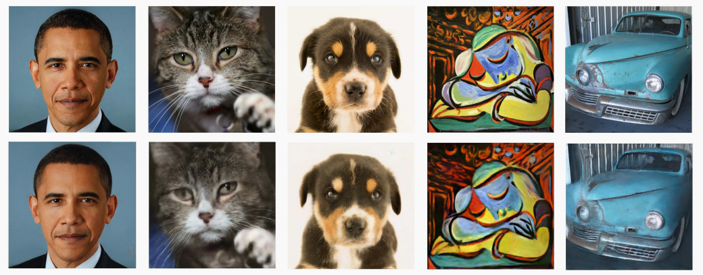
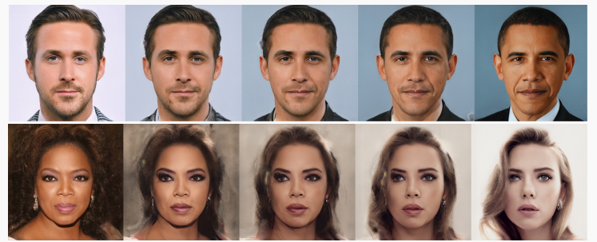
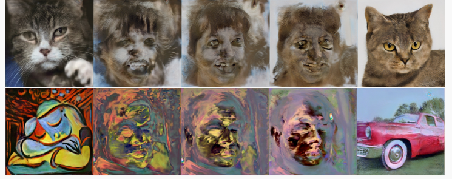
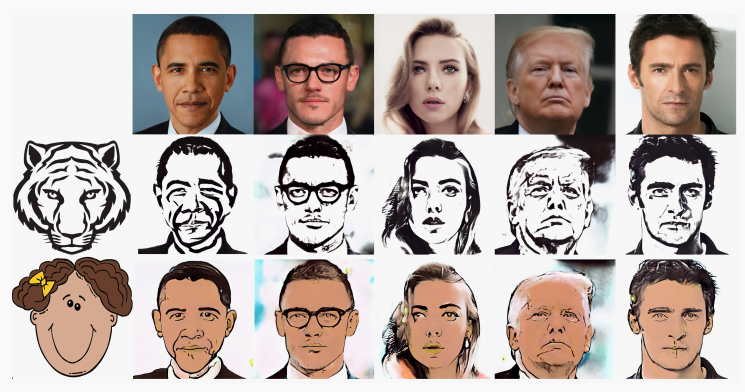
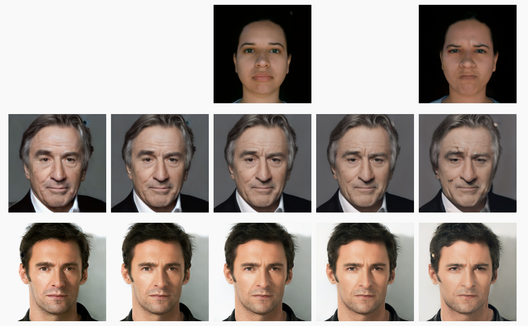

Notice
\(StyleGAN\)效果虽好，每次产生的都是一张随机的脸。如果能够在让\(StyleGAN\)产生一张特定的人脸，应用就会更广泛了。\(Image2StyleGAN\)就是通过图片反向找\(latent~code\)的一项技术。这篇论文方法简单又十分有意思，看完后我忍不住立刻就复现了。在\(GTX1060\)上，还原一张图片大概需要20分钟。
Method
通过图片反向找\(latent~code\)一般有两种思路：
-
训练一个\(Encoder\)将图片编码为\(latent~code\)，这样可以做到实时推理。
-
训练\(latent~code\)，来找这张图片，这样效果好但不能做到实时。
\(Image2StyleGAN\)是基于第二种思路的一个模型。使用这种思路，就必然要面对2个问题：
-
如何选取\(latent~code\)：论文经过比较，发现在\(Z\)空间（512维张量），\(W\)空间（经过映射网络的512维张量）以及\(W^+\)空间（\([18,512]\)维的张量中，\(W^+\)空间的效果明显优于剩下的二者。这里需要说明一下，\(W^+\)空间的\([18,512]\)张量是不要求各个维度都相同的，不然就退化成了\(W\)空间。
-
如何设计损失函数：一个简单的想法是计算生成图像与真实图像的\(MSE\)损失。在此基础上，作者提出借鉴了\(FastNeuralStyle\)中的感知机损失，即在\(VGG16\)的4个卷积层输出的\(feature~map\)上面计算\(MSE\)。总的优化目标为：

作者也做了实验，对比采取各种损失的训练结果。下图第一列是原始图像。可以看到，如果不使用感知器损失，重构图像会比较模糊，缺少纹理特征，如下图第三列。中间一列是采用所有损失后的重构结果，效果最好。

总体算法描述如下图：

Experiment
上面的算法还是比较容易想到的，这篇论文的一大亮点是提出了一些应用以及一些有价值的讨论。下面的所有结果都是建立在人脸数据集上预训练的\(StyleGAN\)上面的。
-
在人脸数据集上预训练的\(StyleGAN\)可以重构出不同类别的图片：

-
利用\(W^+\)空间的\(latent~code\)，构造插值\(w=aw_1+(1-a)w_2\)，可以完成一些有意思的图像渐变工作：

这种方法对于人脸效果较好，但对于其他类别的迁移效果较差，过度图像会出现诡异的人脸：

-
注意到\(Image2StyleGAN\)可以将一些其他类别的图片嵌入到\(StyleGAN\)中，因此可以轻松的完成风格迁移任务。

-
表情迁移。\(w1,w2\)分别是同一个人笑与不笑的\(latent~code\)，那么通过\(w+a(w1-w2)\)可以将一个人的笑容迁移到另外一个人的脸上。这种做法类似于\(Word2Vec\)中，国王-男人+女人=皇后。

最后是作者关于\(Image2StyleGAN\)算法初始化的一点讨论。
如果是重构人脸，作者建议采用\(W_+\)空间\(latent~code\)的平均值作为初值；如果是重构其它类别图像，则建议随机初始化。